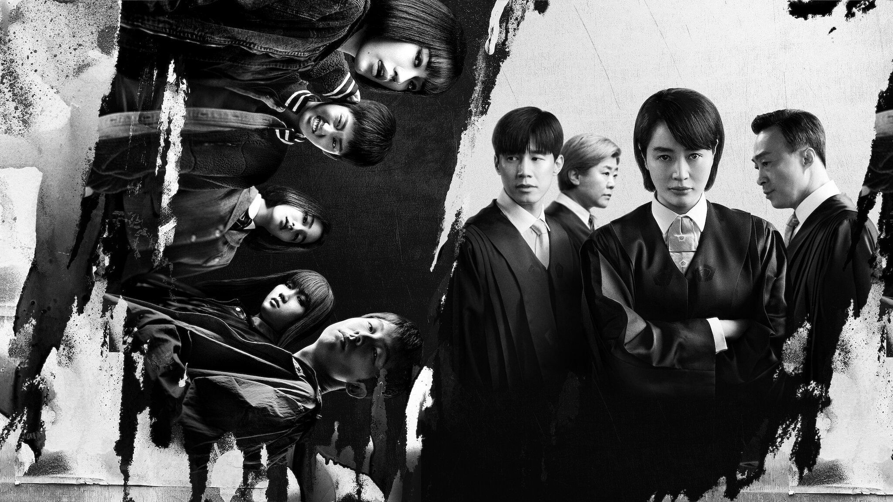
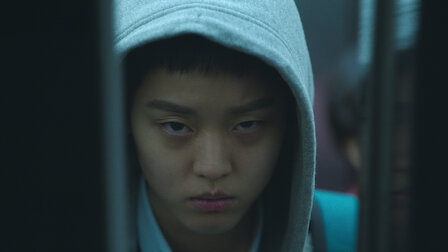
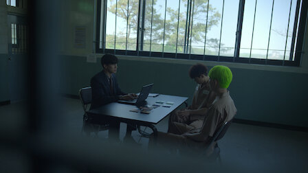

소년심판
2022 | 청불 | 시즌1개 | 드라마 장르
지방법원 소년부의 엄정한 판사. 복잡다단한 사건들을 다루며, 소년범에 대한
반감, 정의와 형벌에 대한 굳건한 신념 사이에서 균형을 잡아간다.
주연 : 김혜수,김무열,이성민
크리에이터 : 홍종찬,김민석
무제한으로 즐기세요
영상
| 소년심판
시즌 1 (예고편): 소년심판
회차
| 소녀심판
소년심판
공개일 : 2022
지방법원 소년부의 엄정한 판사. 복잡다단한 사건들을 다루며, 소년범에 대한 반감, 정의와 형벌에 대한 굳건한
신념 사이에서 균형을 잡아간다.
신념 사이에서 균형을 잡아간다.
-

1화
62분지방법원 소년부 판사로 새로 부임한 심은석은 온정적인 판사 차태주와 일하게 된다. 한편 미성년 살인자가 연루된 살인 사건은 뭔가 앞뒤가 안 맞고 석연치 않다. -
2화
60분공범으로 의심받는 대상을 변칙적인 방식으로 처리한 은석. 이런 행동이 상관의 심기를 건드린다. 재판장에서는 상반된 증언과 날 선 비난이 오가며 분위기가 격앙된다. -
3화
55분한 10대의 상해 사건 뒤에 숨겨진 진실. 그 진실을 찾는 과정은 고통스러운 비밀의 폭로로 이어진다. 한편 태주는 이 사건으로 사적인 일을 떠올린다. -
4화
60분꺼림칙한 전화를 받고 청소년 상담 강사에 대해 조사를 진행하는 판사들. 청소년 회복 센터의 여자아이들이 전화에서 주장한 내용을 뒷받침해준다. -
5화
59분실종된 여자아이들을 찾는 은석과 태주. 아이들이 해를 입기 전에 위치를 파악해야 한다. 한편 내부고발자의 놀라운 정체가 밝혀진다. -
6화
59분상류층 집안 자녀들이 전 국민의 이목이 쏠린 사건에 연루돼 붙잡히고, 이런 가운데 강원중은 자리를 위태롭게 할 수 있는 비밀을 숨긴다. -
7화
67분원중이 올바른 판단을 내리길 바란 은석. 하지만 원중의 재판 진행 과정에 반기를 들 수밖에 없다. 확실한 증거를 대라는 원중의 요구에 은석은 사건을 파헤치기 시작한다. -
8화
63분은석의 만류에도 불구하고 미성년자 무면허 교통사고 사건을 조사하는 태주. 그 과정에서 빠져 있던 중요한 퍼즐 조각을 발견한다. 은석과 태주는 나근희와 마찰을 빚는다. -
9화
61분잔혹한 성폭행 사건 가해자로 지목된 이들. 은석은 그 가운데 유독 한 명에게 집중한다. 한편 태주는 은석의 개인사를 알게 된다. -

10화
69분도망친 일당을 이끄는 리더의 소재를 찾고자 애쓰는 은석. 하지만 엄청난 위험에 처하고 만다. 근희는 자신의 원칙에 맞서는 대항에 직면한다.
상세 정보
오프라인 시청
장르
저장 기능은 광고 없는
멤버십에서만 이용 가능합니다.
멤버십에서만 이용 가능합니다.
드라마,법정 시리즈,범죄 시리즈,한국 드라마
출연
김혜수
김무열
이성민
이정은
함께 시청된 콘텐츠


공개 임박
메니페스트
사냥개들
바비의 인어 공주 이야기
레지던트 이불 2
리키줌
비행기가 착륙하니 세계는 불가사의하게도
이미 수년이 지나있고, 시간의 흐름이
캄승객들만 비껴간 것 같다. 도착한 승객들은
기이한 새로운 현실과 마주한다.
이미 수년이 지나있고, 시간의 흐름이
캄승객들만 비껴간 것 같다. 도착한 승객들은
기이한 새로운 현실과 마주한다.
두 청년 복서가 선한 대부업자와 한뜻으로
뭉친다. 돈 때문에 절박한 약자들을 먹잇감
삼는 악랄한 사채업자에 대적하기 위해.
뭉친다. 돈 때문에 절박한 약자들을 먹잇감
삼는 악랄한 사채업자에 대적하기 위해.
자신이 인어라는 사실을 알게 된 소녀 멀리아.
서핑 챔피언인 멀리아는 돌고래의 도움을 받아
오세아나의 여왕인 엄마를 구해야 한다!
서핑 챔피언인 멀리아는 돌고래의 도움을 받아
오세아나의 여왕인 엄마를 구해야 한다!
죽음의 바이러스가 확산되자 봉쇄에 들어간
라쿤 시티. 좀비와 함께 그곳에 갇힌 앨리스와
엘리트 군단은 새로운 악의 등장을 마주한다.
라쿤 시티. 좀비와 함께 그곳에 갇힌 앨리스와
엘리트 군단은 새로운 악의 등장을 마주한다.
리키 줌과 단짝 바이크 친구들이 바이크 마을
휠포드를 쌩쌩 달려요. 구조 임무도 해내고
빠르게 움직이는 스턴트도 배운답니다.
우리도 함께 신나게 달려볼까요!
휠포드를 쌩쌩 달려요. 구조 임무도 해내고
빠르게 움직이는 스턴트도 배운답니다.
우리도 함께 신나게 달려볼까요!
아놀드
러브 데스티나: 더 무비
뷰티풀 라이프
보디빌딩 챔피언부터 시작해 할리우드
아이콘을 거쳐 정치인이 되기까지, 아놀드
슈워제네거의 다각적인 삶과 커리어를 따라가는
내밀한 다큐시리즈.
아이콘을 거쳐 정치인이 되기까지, 아놀드
슈워제네거의 다각적인 삶과 커리어를 따라가는
내밀한 다큐시리즈.
다른 생에서 사랑했던 여인을 꿈에서 본 한
남자. 그녀를 다시 만나게 될 운명이라고
믿는다. 하지만 정체를 알 수 없는 시간 여행자가
나타나 그의 계획을 방해한다.
남자. 그녀를 다시 만나게 될 운명이라고
믿는다. 하지만 정체를 알 수 없는 시간 여행자가
나타나 그의 계획을 방해한다.
남다른 재능을 숨기고 살던 청년 어부가 어느
날 한 음악 프로듀서의 눈길을 끈다. 그의
앞에서 손짓하는 스타덤과 사랑. 그는 이 새로운
길에 뛰어들 준비가 되었을까?
날 한 음악 프로듀서의 눈길을 끈다. 그의
앞에서 손짓하는 스타덤과 사랑. 그는 이 새로운
길에 뛰어들 준비가 되었을까?